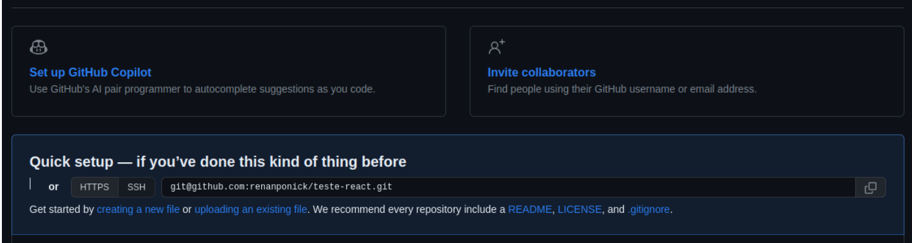
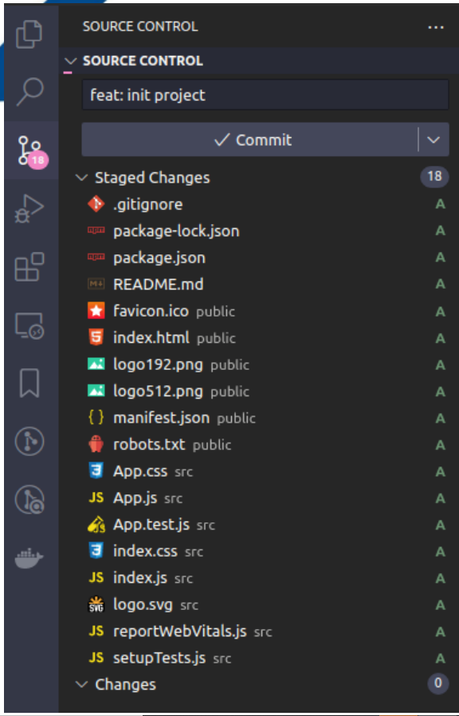
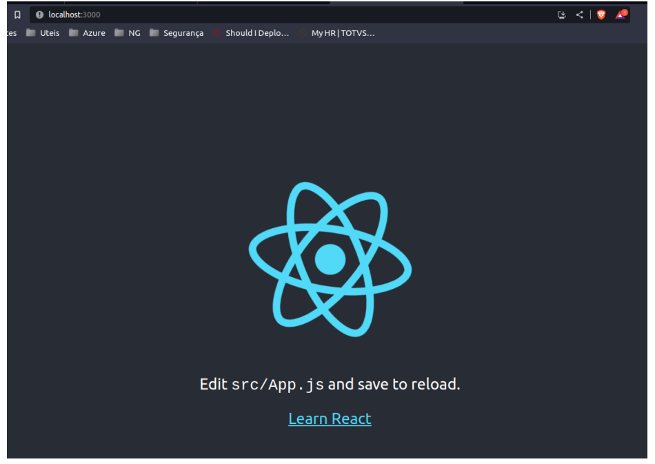
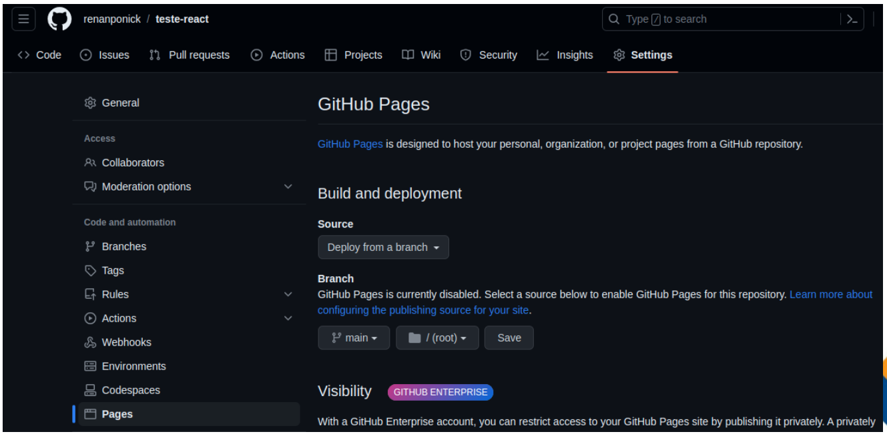

O GitHub Pages publica qualquer arquivo estático do qual você faz push no repositório. É possível criar seus próprios arquivos estáticos ou usar um gerador de site estático para que ele crie o site para você. Também pode personalizar seu próprio processo de criação localmente ou em outro servidor.
No video abaixo irei explicar como colocar seu arquivo no github pages
Caso o link do site não apareça de primeira recarregue a pagina
O processo é o mesmo porem terá que fazer alguns ajustes
Suba todos os arquivos para o GitHub, igual na imagem embaixo Caso não tenha conseguido, pode ser que precise executar os seguintes comandos no terminal: git branch -M main git push -u origin main
Antes de subirmos para o GitHubPages, vamos rodar nosso repositório localmente, para ver o que ele faz. Execute: npm start
Agora vamos hospeda-lo, seguindo os mesmo passos anteriores, acesse o repositório, acesse Settings, acesse em Pages, selecione a branch main e clique em Save, aguarde alguns minutos...
Pronto!